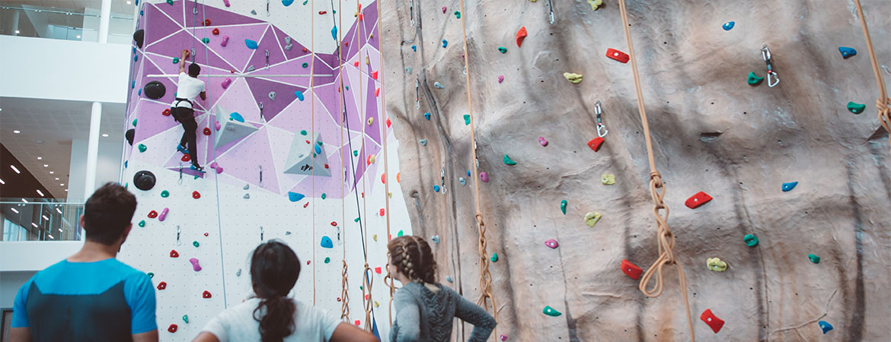

Stage
Il est demandé dans le cadre de ma formation en Bachelor Universitaire de Technologie de faire 22
semaines de stage en entreprise sur 3 ans.
Le premier stage qui se déroule pendant la deuxième année de la formation dure donc 10
semaines et le second en troisième année dure quant à lui 12 semaines.
Le but en intégrant une entreprise informatique est de développer nos compétences techniques, mais
pas que. En effet, le contact avec le client ou les mises en situation sont extrêmement importants
afin de d’accroître les compétences nécessaires dans le monde professionnel.
Etant actuellement en première année de BUT Informatique, je suis donc à la recherche d’un stage
d’une durée de 10 semaines durant le 1er semestre 2024.
N’hésitez pas à consulter les autres pages de ce site afin de voir si mon profil vous intéresse.
Expériences pro

J’ai eu l’occasion au cours de ma vie de travailler dans 3 entreprises différentes au cours de divers
job d’été.
Ma première expérience était dans le gîte Ecoasis où je devais m’occuper de tâches comme le contact avec la clientèle,
le nettoyage ou encore la cuisine.
J’ai ensuite travaillé dans un magasin Biocoop en tant qu’employé
polyvalent. Mon rôle était de m’occuper de la mise en rayon, du réassort et de l’encaissement des
clients.
Et j’ai finalement eu l’opportunité l’été dernier d’obtenir un poste dans le domaine de la
restauration qui fut très formateur, tant au niveau du contact avec la clientèle qu’au processus mis
en place dans un restaurant.
À propos de moi
Mes loisirs
Je pratique actuellement des loisirs assez variés qui me permettent de m’épanouir dans ma vie
d’étudiant.
Je pratique depuis mes 9 ans la trompette notamment dans un orchestre d’harmonie ainsi que dans un
quatuor. J’aime cet instrument qui me permet de me défouler tout en restant technique et ardu.
D’un autre côté, je fais également de l’escalade en intérieur depuis quelques années. J’ai la chance
cette année de pouvoir continuer ce sport dans les installations sportives de l'Université de Caen
qui sont complètes dans ce domaine.

Mes passions
Je m’intéresse beaucoup à la photographie et plus particulièrement aux prises de vues et portraits de
l’artiste américain Steve McCurry. Vous le connaissez notamment pour des photos comme Afghan girl.
En plus de l’escalade et de la trompette, je m’intéresse au monde de l’informatique, et plus
particulièrement aux langages Python (ce langage d'assisté) et C. Le développement web m’intéresse également (HTML, CSS et
Javascript).
De plus, je suis attentif à l’actualité nationale et internationale. J’ai d’ailleurs présenté lors
d’une chronique radiophonique un sujet portant sur l’empire médiatique de Vincent Bolloré. Vous
pouvez cliquer ici pour la visionner.
Et pour finir, je m’intéresse beaucoup au monde de l’espace et à l’astronomie. Mon intérêt pour la
photographie peut également se retrouver dans l’astronomie et notamment grâce aux images prises par
le satellite Hubble.
Ci-dessous se trouve une compilation de celles que je considère comme étant des plus impressionnantes
et qui je pense vous sont familières.
Contact
Ou contactez moi via ces réseaux sociaux